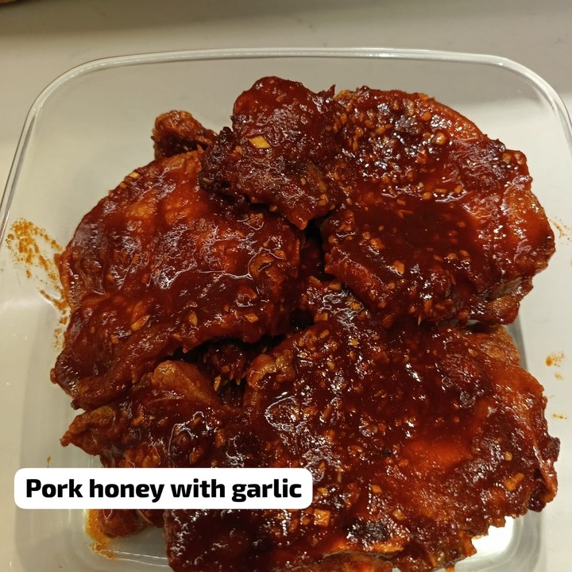
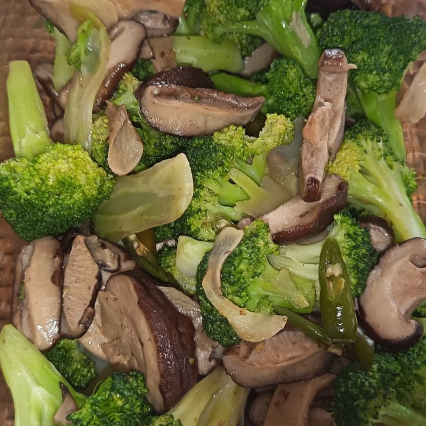

Filipino · 41 · Children, cooking & household
Eight and a half years with one family, having taken their baby at four months old. Recommended in writing by the family she is with now, who have offered to speak with families directly — and who say they cannot recommend her highly enough.
Trust signals
Our strongest trust signal — the family she works for now, recommending her in writing and willing to speak for her directly.
At a glance
The essentials
Available from
14 December 2026. Transfer within Singapore.
Where she is now
Since November 2024 — a Sri Lankan family of four in a landed house, with two children now nine and five. The cooking, the house, the garden and the car.
Eight and a half years, one family
October 2015 to April 2024 — a family in a two-storey landed house whose baby she took at four months old. Registered for cooking, the household, a toddler and an elderly member of the family.
Children she has cared for
From four months old upward, and at every age since — a baby through to school, children of five, seven, eight, nine, twelve and fourteen, and a five-year-old boy with autism in 2013–14 whom she took to and from school.
Cooking
Chinese and Western cooking, and Sri Lankan dishes she learned in her current household — curries, dhal, a whole fish in dark spice paste. Photographs below.
Why she is leaving
The family are leaving Singapore. Nothing to do with her work — they are the ones recommending her, and offering to take a family’s call themselves.
Five households since July 2012 — and eight and a half years in one of them.
July 2012 to May 2013. Her first job in Singapore, a household of three in a four-room flat — a Chinese family with two children of seven and twelve.
May 2013 to October 2014. A second Chinese family, also three in a four-room flat, with a boy of five who is autistic. She took him to and from school and looked after him through the day. It is real special-needs experience, and worth asking her about properly. She returned to Singapore in October 2015.
October 2015 to April 2024 — eight years and five months. One household, one unbroken registration: a family in a two-storey landed house, whose baby she took at four months old and saw through to a child of eight. Her record for that placement carries cooking, general housework, the care of a young child and the care of an elderly member of the family — which is most of what a household can ask.
July to November 2024. A household of five in a private flat, with children of eight and fourteen, before she moved to the family she is with now.
November 2024 to now — two years. A Sri Lankan family of four in a landed house, with two children now nine and five. The cooking, the whole of the house, the garden, and the car washed once a week. Her employer wrote her a recommendation in September and describes her as kind, calm, and someone who does her absolute best.
Where she’d suit next. A family with children, at almost any age — she has taken one from four months to eight, and has looked after children at every age between five and fourteen. She cooks across Chinese, Western and Sri Lankan food, and has run a landed house, a garden and a car for the last two years, so a larger home is familiar ground. The thing worth reading twice is the eight and a half years: when a household suits her, she stays.
Her written recommendation, her referee’s details and her employment record are available to interested families, with her consent.
Photographs Ruby Ann took of her own cooking — chicken curry, prawn curry, dhal with okra and dried chilli, fish in a dark spice paste, honey pork with garlic, and broccoli with shiitake mushrooms.


Tell us a little about your household and we’ll be in touch within 1–2 business days. We’ll only move forward if it feels like a genuine fit.